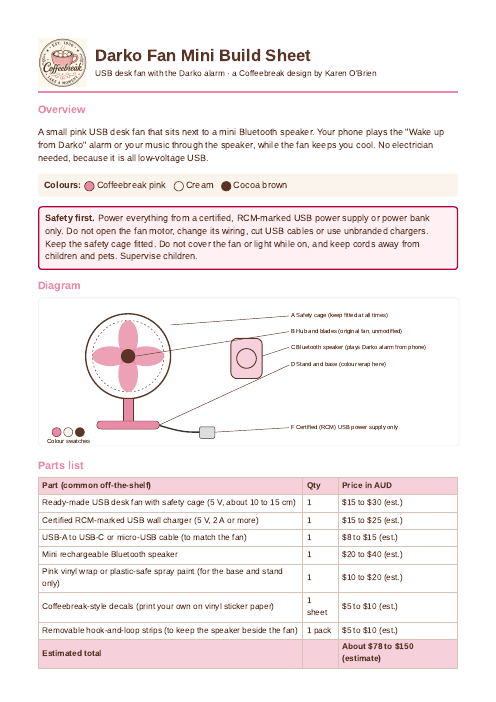
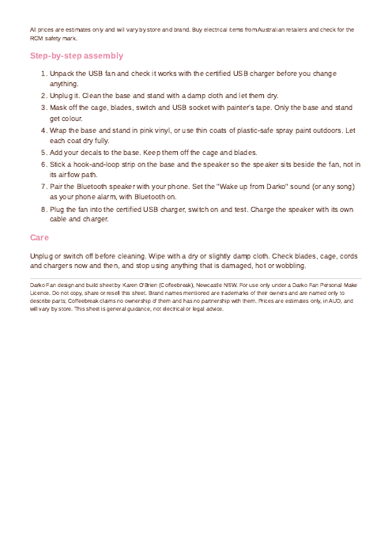
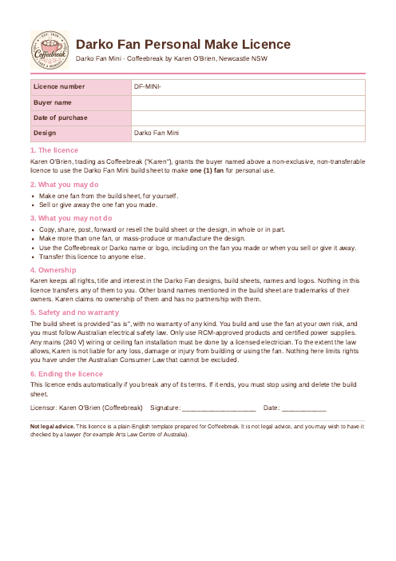

Coffeebreak Darko Fan Mini Build Licence
Free
Darko Fan build sheet and make licence. Preview the pages below and download the PDFs.


Download darko fan mini build sheet (PDF)

Free
Darko Fan build sheet and make licence. Preview the pages below and download the PDFs.


Download darko fan mini build sheet (PDF)

☕ Free to use — tip if you like: PayID darkokaz@gmx.com (Teachers Mutual Bank). Put the app name in the reference.
Disclaimer: Provided as is for personal and entertainment use; not professional, medical, legal or financial advice. Coffeebreak and app names are trademarks of Karen O'Brien. Other brands belong to their owners.